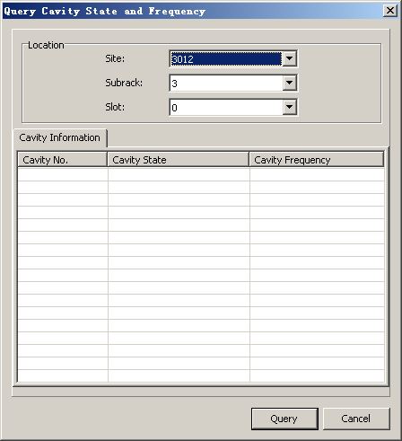
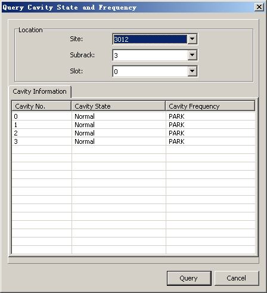

This describes how to query the status and frequencies of the cavity combiners in the DFCU/DFCB. The DFCU/DFCB has four cavities, each of which has its own status and frequency.
Prerequisites
- The LMT runs normally.
- The communication between the LMT and the BSC is normal.
- The communication between the BSC and the BTS is normal.
Context
This describes how to query the status and the frequencies of the DFCU/DFCB of the BTS3012, BTS3012AE, and BTS3012Ⅱ.
Procedure
- Through GUI
- Choose .
Figure 1 Query Cavity State and Frequency dialog box
- Set parameters in the Location area, and then click Query. The query results are displayed, as shown in Figure 2.
Figure 2 Querying the cavity state and frequency
- Click Cancel.
- Through MML
- On the LMT, run the DSP BTSCAVSTAT command to query the status and frequency of the cavity combiner.
Copyright © Huawei Technologies Co., Ltd.